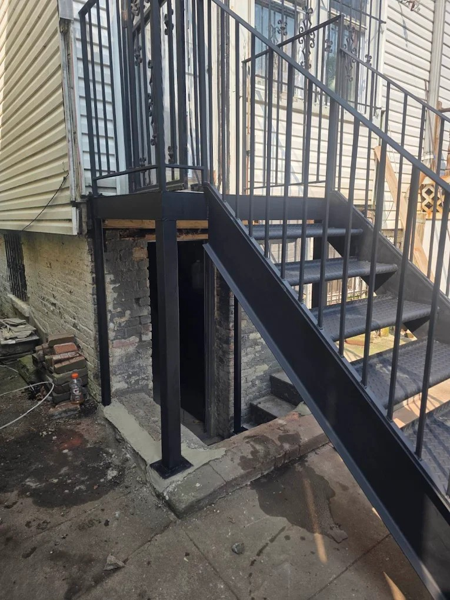
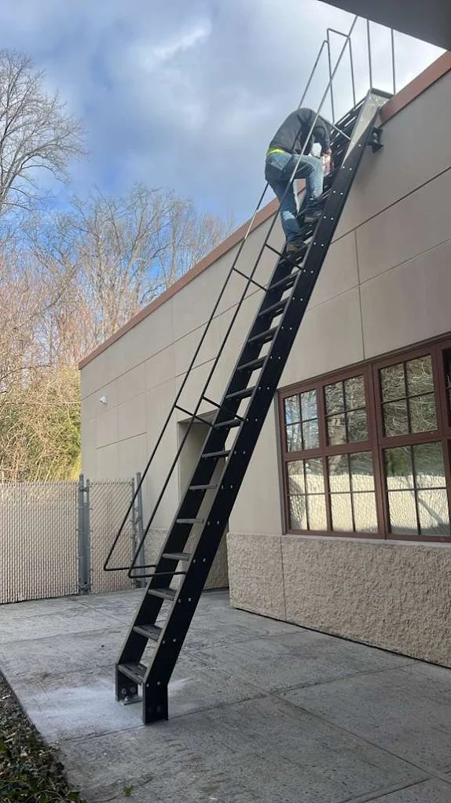
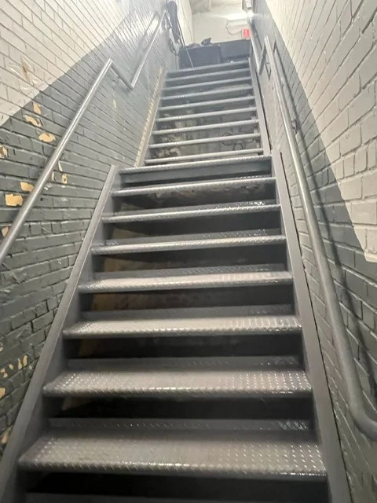
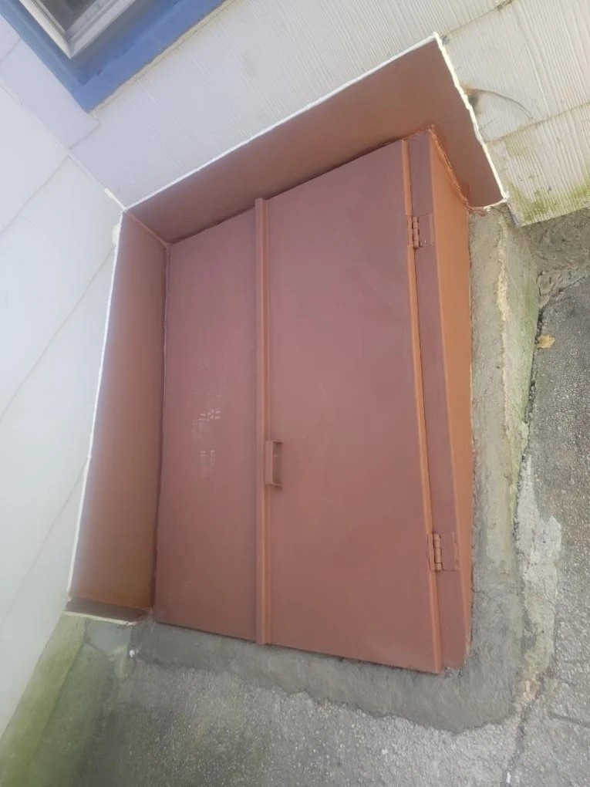

What to Look for When Hiring a Steel Fabricator in Brooklyn
Proudly serving Brooklyn and the surrounding communities.
Steel Masters NYCProudly serving Brooklyn and the surrounding communities.
Steel Masters NYCBrooklyn is a borough defined as much by its built environment as by its people. From the dense commercial corridors of Flatbush Avenue to the industrial waterfronts of Red Hook, property owners and contractors across Brooklyn depend on skilled steel fabricators to keep buildings safe, functional, and properly maintained. Whether you need a reinforced cellar door, custom steel stairs, or expanded metal security caging, choosing the right steel fabrication company is one of the most consequential decisions you can make for a Brooklyn property. The wrong choice means delays, failed inspections, and costly rework. The right one delivers durable metalwork that lasts decades in New York's demanding climate.
Steel Masters NYC has been Brooklyn's trusted steel fabricator since 1972, bringing over five decades of hands-on expertise to every project — from structural steel alterations and sidewalk cellar doors to custom steel staircases and Economaster trash bin enclosures. The company serves residential and commercial clients throughout Brooklyn, Manhattan, Queens, and the Bronx, earning a reputation for precision metalwork that survives the rigors of New York City's demanding construction environment and street-level use. metal fabrication New York
Finding the right steel fabricator in Brooklyn starts with understanding the scope of your project and confirming that the company you hire actually specializes in it. Not every shop that advertises iron works Brooklyn handles the full range of services — structural alterations, sidewalk-compliant cellar doors, and custom railing systems all require different tooling, certifications, and site experience. When vetting a fabricator, request to see previous projects in similar Brooklyn neighborhoods, confirm they carry general liability insurance and workers' compensation, and ask about their experience with local inspection requirements. A shop that has been operating in Brooklyn since the 1970s will have navigated far more inspection cycles and technical updates than a newer operation.

Legitimate steel fabricators working in New York City must operate within a framework of licensing, insurance, and professional standards. When you hire a steel fabricator in Brooklyn for structural work, the company should be able to demonstrate active liability coverage, proper business registration with New York State, and familiarity with structural steel installation requirements. For sidewalk cellar door installations, knowledge of sidewalk load specifications is equally essential. Steel Masters NYC has built its reputation over five decades by maintaining these credentials and staying current with evolving city requirements, ensuring every installation passes inspection without costly callbacks or re-work delays. commercial steel fabrication NYC
Brooklyn's housing stock — a mix of pre-war brownstones, mid-century apartment buildings, and modern commercial developments — creates consistent demand for a specific range of fabrication services. Sidewalk cellar doors are among the most requested, as aging pre-manufactured doors fail under decades of foot traffic and require replacement with heavier, properly fabricated steel units. Steel staircases are equally essential, both for interior residential use and for fire egress in multi-family buildings. Roof railings, pipe railings, and guard railings are required on many Brooklyn structures, and Economaster trash bin enclosures have become standard for commercial corridors across Bed-Stuy, Crown Heights, and East Flatbush. A versatile Brooklyn steel fabricator should handle all of these confidently.

Neighborhoods like Crown Heights, Bed-Stuy, and Bushwick are seeing active renovation and new construction activity, making access to a reliable local steel fabricator more important than ever. Property owners in these areas prefer contractors who understand the specific requirements for Kings County, know how to navigate tight urban job sites, and can source materials quickly without extended lead times. Steel Masters NYC is positioned at 135 Liberty Ave in Brooklyn, ZIP 11212 — right in the heart of the borough — making service calls to Crown Heights, Bed-Stuy, and East New York faster and more cost-effective than contractors based in New Jersey or Long Island. Local expertise translates directly into fewer delays and tighter project timelines. commercial iron works contractors
Steel fabrication is a skilled trade where experience compounds over time. A shop that has been fabricating and installing metalwork in Brooklyn since 1972 has encountered — and solved — problems that newer operations have never faced. That institutional knowledge matters when a brownstone has a non-standard cellar opening, when a commercial building's staircase footprint doesn't match any catalog template, or when an inspector flags an aspect of a railing installation for dimensional compliance. Steel Masters NYC's decades of Brooklyn-specific experience mean that most complications are recognized and addressed before they become expensive problems. Clients consistently note that the team's familiarity with New York City's construction ecosystem is itself a significant value-add.
Custom steel fabrication pricing in Brooklyn depends on project type, material gauge, finish requirements, and site conditions. A standard sidewalk cellar door replacement generally ranges from a few thousand dollars for a single-leaf unit up to significantly more for double-leaf, reinforced installations with custom sizing. Steel staircases for residential brownstones vary based on tread count, railing style, and whether interior or exterior installation is required. Roof and pipe railing systems are typically priced per linear foot. Rather than relying on ballpark estimates from online sources, Brooklyn property owners should request itemized quotes from qualified fabricators like Steel Masters NYC to get accurate pricing for their specific conditions. steel railings and guardrails
Steel Masters NYC serves customers throughout Brooklyn and Kings County, including Crown Heights, Bed-Stuy, East New York, East Flatbush, Flatbush, Bushwick, Red Hook, and Sunset Park. Whether you're in Bay Ridge or Williamsburg, our steel fabrication team is nearby and ready to help with your commercial or residential metalwork project.






